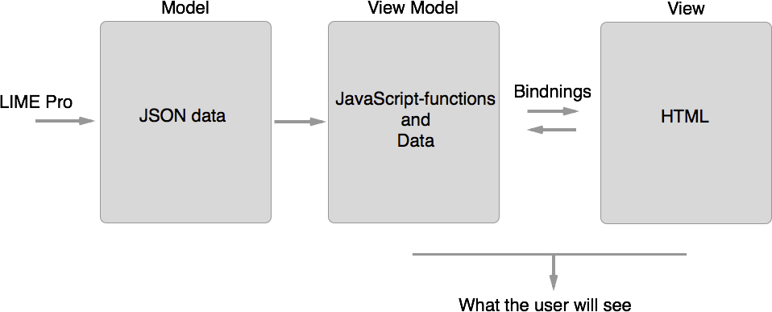
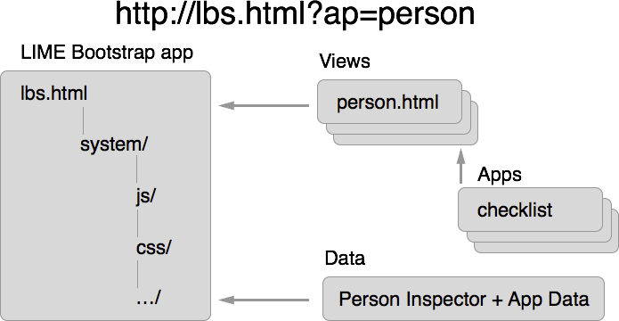
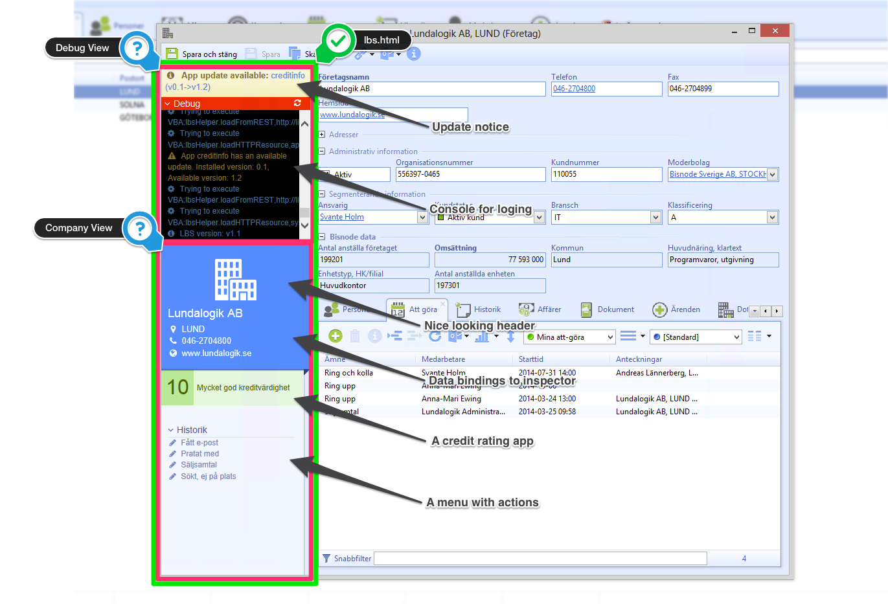
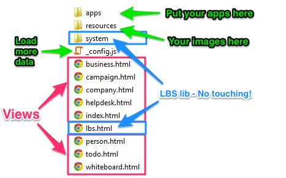
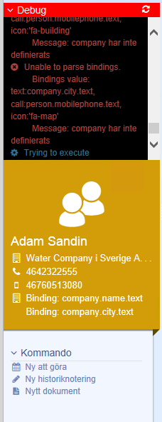

LIME Bootstrap tutorial
What is LIME Bootstrap (LBS)?
LBS is:
- A way of building nice looking HTML things in LIME Pro without worrying too much
- A framework of smart libraries
- A open source project, free to contribute to
- A platform and store for delivering apps
- A version control system
A Model-View-View Model framework

Powered by knockout.js
A single page app like structure

->Further reading
A single page app like structure
Heart and soul of LBS:
Included smart tools:
Online resources
Quiz time!
- Where do I go to find everything I need to know?
- What is a View, a ViewModel and a model?
- I'm dealing with Time and Dates. What should I do?
Getting Started, what you need:
- Open the test database "limebootstrap" on "luserver1011"
- A text editor. Sublime Text, Notepad++ or Visual Studio will do great. Notepad won't.
- A web browser with KnockoutJS, Twitter Bootstrap and Manual open
- Open the ActionPad folder (Alt-F11)
Folder structure:
What's happening?

Working with views
- A view is a partial web-page, containing only part of the page
- A view should never load any resources, such as JavaScript or CSS!
- Contained in an .html-file, i.e "company.html"
- The query-string "?ap=[viewname]" decides which view is loaded
- LIME automatically sets "?ap=[Name of class of ActiveInspector]
Bidings:
A Simple Binding
Say hello:
Working with ViewModels
//ViewModel
var person = {
firstName: "Kalle",
lastName: "Kula",
age:ko.observable(21),
birthday: function(){
person.age(person.age() + 1);
}
}
DataSources in LIME
- In LIME Pro all datasources are automatically converted to JSON and made into a ViewModel
- Default you'll always have the ActiveInspector and all Localizations
//Company as ActiveInspector
var vm = {
"company":{
"name":{
"text":"Lundalogik",
"value":"Lundalogik"
},
"responsible":{
"text":"Erik Syrén",
"value":1001
},
"relation":{
"text":"3. Customer",
"value":12031,
"key":"customer"
},
...
},
"localize":{
"Actionpad_Index":{
"links":"Länkar"
},
...
}
}
Quiz time!
- What type of fields do you think corresponds to the JSON in previous slide?
- Check out some LBS or Knockout bindings. When do you need them?
- In the ViewModel example we used "ko.observable()". What is it used for?
Assignment 1:
Our dear customer "The Empire" would like to have an ActionPad on the Person card. They like to keep it simple and would only like to have the person's name displayed. Can you fix this? The customer's project manager mr Vader will help oversee the construction
Assignment 1:
Open "person.html" and add:
Assignment 2:
You have angered Mr. Vader (not good, your planet might be doomed), by making a butt ugly ActionPad. You should have known better! Let's make it beautiful by adding a header-section. Vader does like orange (!)
Assignment 2:
Quiz time!
- How did LBS know it should use a picture in the heading?
- Where do you find more pictures like this one?
- My customer would like a custom color. How should I do that?
Assignment 3:
Now impressed with your craftsmanship mr. Vader would like to have quick access the person's email and phone in the actionpad. Please remember your previous mistake of making things butt ugly. Add some "info-links" and checkout Font Awesome and the LBS "icon"-binding
Assignment 3:
Assignment 4:
Now you have really pissed off mr. Vader! Nothing happens when he clicks the links (He even tried with something he called The Force. Did. Not. Work.). Fix it, and fix it fast! Check out if the LBS bindings can help you! Help!
Assignment 4:
-
Assignment 5:
Now once again happy, Vader decides he would like even more information. This time from the the related company card. He would like the name of the company (clickable of course) and company city with a map connection and company phone. Let's just jump into to it! How hard can it be?
If you tried something similar to this:
...
...
-
...
Or like this:
...
...
-
...
You might have made Vader say bad things to a puppy.
Your ActionPad will probably look like this:
 The red this is the debug log. She is our friend. She shows up if we make a bad mistake and tries to help us fix it. We can even have here around all the time to help us. Just open "_config.js" and set "debug=true". Do this nowThe console log says that "company is undefined". By default only the ActiveInspectors' data is loaded. Luckily we can ask for more data in "_config.js". Add a "person" node and a dataSource. There is a nice VBA function "ActionPadTools.GetCompanyContactData" which returns a related company record
lbs.externalConfig = {
/**
Enable or disable the debug console
for the whole application
**/
debug: true,
/**
Configure special use cases,
mainly when requiring additional datasources
**/
config:{
'index' : {
dataSources: [
{ type: 'localization', source: '' },
],
autorefresh : false
},
'person' : {
dataSources: [
{type: 'activeInspector', source: ''},
{type: 'localization', source: '' },
{type: 'relatedRecord', source: 'company', view: 'name;postalcity;phone'},
],
autorefresh : false
}
}
}
Assignment 7:
Great! That went well!
Mr. Vader is overjoyed! He would now like an (evil) button to terminate the person! Say what? Well the customers wish is our law! We have prepared the most evil of functions: "ActionPad_Person.Terminate". Remember the text should work in many languages
The localizations is cached in a variable in "Localize.dicLookup". You must invalidate the cache by setting the variable to nothing
...
...
Nice! Helping the Empire do it's business!
Slight problem now. Due to your GUI the empire now tries to terminate already dead people. The button should only be visible if the person is active!
...
...
Problems! The function is now being a bit overused. The bodies are piling up the garbage disposal plant
It should also only be visible for admins.
Assignment 8:
Due to a bit over use of the termination feature it is hard to find anybody alive at all. Mr. Vader would like to see a list of all person's on all companies with the same name as the person's company, their status and an icon. There is a VBA function to help you load the data, called "ActionPad_Person.GetPersons". Checkout the KnockoutJS binding "foreach:"
person.html
...
...
_config.js
'person' : {
dataSources: [
{type: 'activeInspector', source: ''},
{type: 'localization', source: '' },
{type: 'relatedRecord', source: 'company', view: 'name;postalcity;phone'},
{type: 'records', source: 'ActionPad_Person.GetPersons', alias: 'persons'},
],
autorefresh : false
}
Assignment 9: Apps apps apps!
Vader whould like to see his total kill count on the Index ActionPad. There is an app for that! App the app: Infotile and make it nice!
Assignment 10: Let's make a app!
Due to the loss of two Death Stars (one mainly due to small furry teddy bears) the Empire it's looking into its engineering practices. They are a bit worried about your code in Assignment 8. Rewrite it as an app! You should be able to filter it.